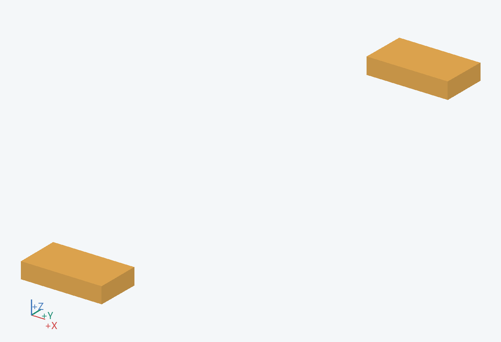
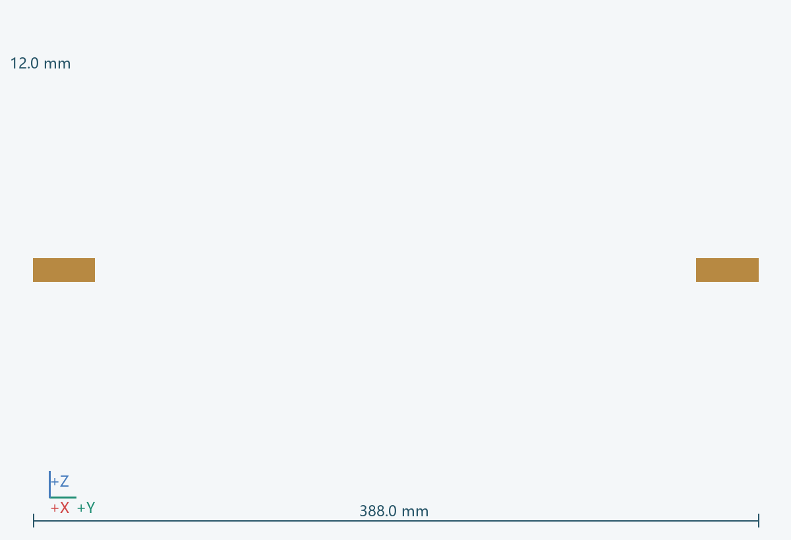
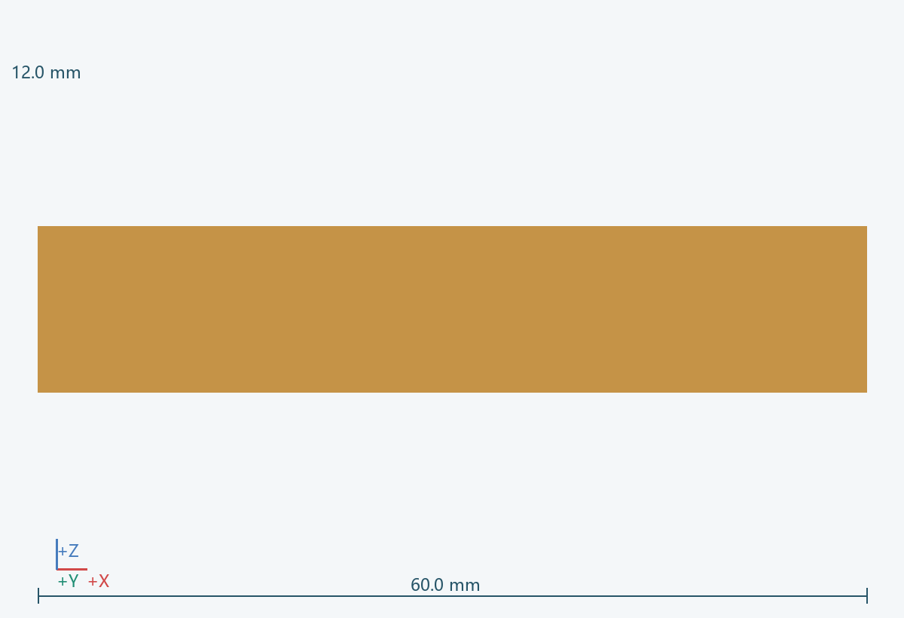
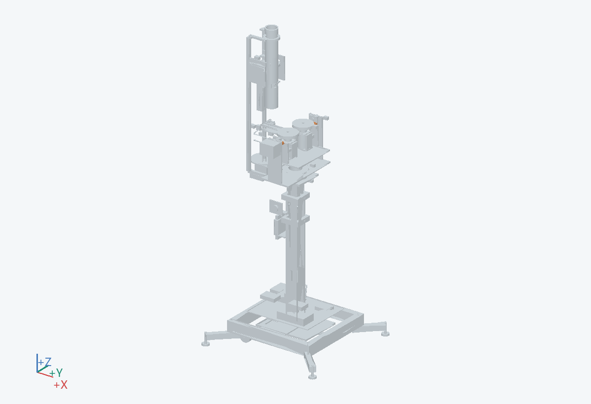

60.0 × 388.0 × 12.0 mm（含所示实例）
为轮轴、滑台、转速传感器和罩壳提供共同的刚性基准。
接 0402、0502、0703 和 0801；轮与球头的相对位置都从 H 定义。
铝合金/钢板与两侧加强耳板
机头整体从耳轴卸下后检修。
阶梯与窄尾用于避让俯仰横梁/固定筒柱；板厚初值 12，刚度、振动与组合姿态仍待校核。 关联：U07/U09
PRT-0501-E__L, PRT-0501-E__R